library('glmmTMB')
library('MASS')
library('bbmle')
library('ggplot2')
library('ggthemes')
library('data.table')
library('DHARMa')
library('tidyverse')
library('kableExtra')model_selection_diagnostics
Libraries
Import data
setwd("//cdc.gov/project/ATS_GIS_Store4/Projects/prj06135_Shigella_SVI/Data/Final Datasets/")
race<-setDT(read.csv("Final_Aggregate_ByRace_2022-12-28.csv"))Data characteristics
The final dataset includes a row for each unique combination of census tract, time period, age group, sex, and race. The outcome variable, Cases, is the aggregate number of cases for that combination. The Pop variable corresponds to the underlying population total in that category. Because population data was not available for cross-tabluations of race and ethnicity, race and ethnicity case and population totals have been calculated separately (each race category includes both Hispanic and non-Hispanic categories. Records have been merged with the SVI data that most closely corresponds to the year of diagnosis and with the NCHS urban-rural classification codes.
head(race) GEOID sviyear AgeGroup Sex Race Pop moe Cases State RPL_THEMES
1: 2.00006e+14 2000 0-4 F A 26 NA 0 CA 0.029
2: 2.00006e+14 2000 0-4 F B 4 NA 0 CA 0.029
3: 2.00006e+14 2000 0-4 F I 0 NA 0 CA 0.029
4: 2.00006e+14 2000 0-4 F M 8 NA 0 CA 0.029
5: 2.00006e+14 2000 0-4 F O 0 NA 0 CA 0.029
6: 2.00006e+14 2000 0-4 F P 0 NA 0 CA 0.029
quartile UrCode
1: 1 lrg central metro
2: 1 lrg central metro
3: 1 lrg central metro
4: 1 lrg central metro
5: 1 lrg central metro
6: 1 lrg central metroData Preparation
Because census tract ID’s are reused between versions, we need to qualify the census tract id number by census tract version.
race[,GEOID := ifelse(sviyear==2000, paste0('2000', GEOID), paste0('2010', GEOID))]Factor covariates and set desired reference category.
race[, c('Race', 'UrCode', 'quartile') := list(
factor(Race, levels=c('W', 'B', 'A', 'I', 'P', 'M', 'O'),
labels=c('White', 'Black', 'Asian', 'Native American',
'Pacific Islander', 'Multiracial', 'Other')),
factor(UrCode, levels=c('lrg central metro', 'lrg fringe metro', 'med metor', 'sml metro', 'micropolitan', 'non-core')),
factor(quartile, levels=1:4))]Data quality checks
kbl(race[Cases>Pop, .N, by=c('Race')]) %>%
kable_styling(bootstrap_options = c("striped", "hover", "condensed"))| Race | N |
|---|---|
| Other | 361 |
| White | 85 |
| Black | 310 |
| Native American | 83 |
| Pacific Islander | 60 |
| Asian | 118 |
| Multiracial | 94 |
temp<-race[, list(Percent_with_no_cases = sum(Cases==0)/.N),
by=list(AgeGroup, Sex, sviyear, Race)]
summary(temp$Percent_with_no_cases) Min. 1st Qu. Median Mean 3rd Qu. Max.
0.9259 0.9921 0.9984 0.9918 0.9995 1.0000 There are 1111 records with more cases than population. This may be due to sampling error in the population data, which is sourced from the ACS for sviyears after 2005. Additionally, the average number of tracts without any cases for a specific category combination is 0.9918296.
Ratio of variance to mean of cases by race, sex, and year
kbl(dcast(Race + Sex ~ sviyear, value.var = 'Ratio',
data=race[, list(Ratio=round(var(Cases)/mean(Cases), 3)),
by = c('Race', 'Sex', 'sviyear')])) %>%
kable_styling(bootstrap_options = c("striped", "hover", "condensed"))| Race | Sex | 2000 | 2010 | 2014 | 2016 | 2018 |
|---|---|---|---|---|---|---|
| White | F | 1.231 | 1.533 | 1.299 | 1.252 | 1.099 |
| White | M | 1.505 | 1.782 | 1.745 | 1.340 | 1.531 |
| Black | F | 1.161 | 1.430 | 1.339 | 1.187 | 1.075 |
| Black | M | 1.193 | 1.417 | 1.406 | 1.260 | 1.455 |
| Asian | F | 1.082 | 0.998 | 1.096 | 0.999 | 1.068 |
| Asian | M | 0.999 | 1.050 | 1.044 | 1.025 | 1.050 |
| Native American | F | 1.374 | 2.471 | 1.538 | 1.421 | 1.000 |
| Native American | M | 1.482 | 2.070 | 1.363 | 1.000 | 1.000 |
| Pacific Islander | F | 1.000 | 1.000 | 1.000 | 1.000 | 1.000 |
| Pacific Islander | M | 1.000 | 1.000 | 1.000 | 1.000 | 1.111 |
| Multiracial | F | 1.285 | 0.999 | 1.048 | 1.044 | 0.999 |
| Multiracial | M | 0.999 | 1.110 | 1.145 | 1.070 | 1.062 |
| Other | F | 1.204 | 1.195 | 1.193 | 1.081 | 1.071 |
| Other | M | 0.999 | 1.099 | 1.086 | 1.088 | 1.159 |
Visualize distribution of number of cases for census tract for all race groups
These plots shows distribution of tracts by number of cases for each race and ethnicity category for all years, age groups and sex combined.
ggplot(race[, list(Cases=sum(Cases)), by=list(GEOID, Race)],
aes(x=Cases)) +
facet_grid(.~Race)+
geom_histogram(position="identity", bins=10, fill='#D23E43', color='black')+
theme_light()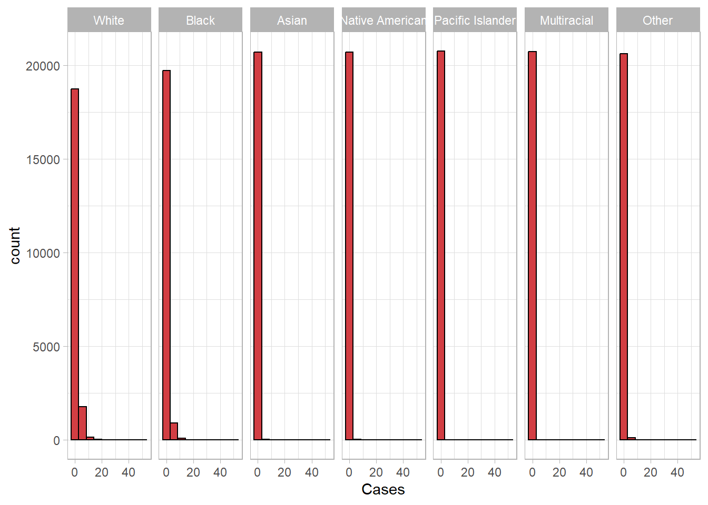
Analysis Part 1
Original Research Objective: Are there residual effects of race on the incidence of Shigella after controlling for SVI?
Alternate Research Objective: Does the impact of SVI on Shigella incidence vary by race?
Primary outcome: New cases of Shigella, offset by population
Primary predictor: SVI quartile
Additional covariates: Sex, age group, year (grouped by svi version)
I have records with zero population so including population counts as an offset (i.e., log(0)=-inf error). Therefore, I’m dropping zero population counts and including the log of pop as an offset.
race<-race[Pop>0 & Cases <= Pop & !is.na(Race), ]Visualize bivariate associations
Shigella Rate per 100K by SVI Quartile and Race among Tracts One or More Cases
ggplot(race[Cases>0 &!is.na(quartile),],aes(x=factor(quartile),y=Cases/Pop*100000, color=Race))+
facet_wrap(~Race, scales='free')+
stat_summary(fun.data=mean_cl_boot,size=1)+
scale_color_calc()+
theme_bw()+
theme(legend.position = 'none')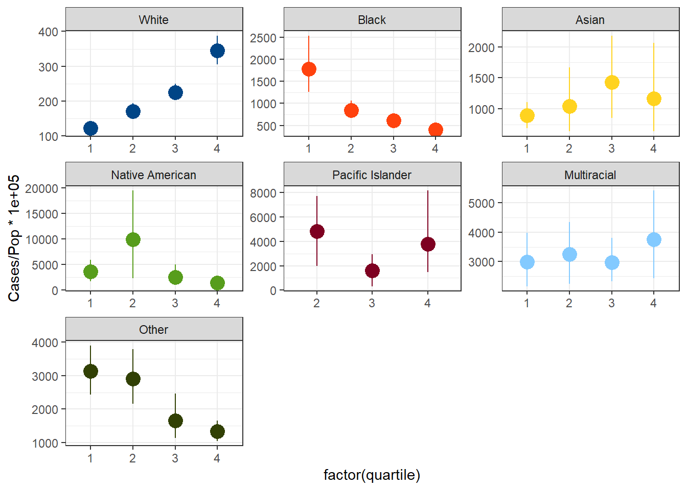
Log(Shigella Rate per 100K) by SVI Score among Tracts One or More Cases by Age and Sex for Each Race Category
plots <- race %>%
filter(Cases>0) %>%
split(.$Race) %>%
map(~ggplot(.x, aes(RPL_THEMES, log(Cases/Pop*100000))) +
facet_grid(cols=vars(AgeGroup), rows=vars(Sex), scales='free')+
geom_point()+
stat_sum(alpha=0.5) + ## show overlapping/replicated points as circles (semi-transparent)
scale_size(range=c(2,8)) + ## cosmetic: make minimum size (non-replicated) points larger
## fit and display a flexible smooth curve for point data
geom_smooth(method="gam",method.args=list(family="quasipoisson"))
)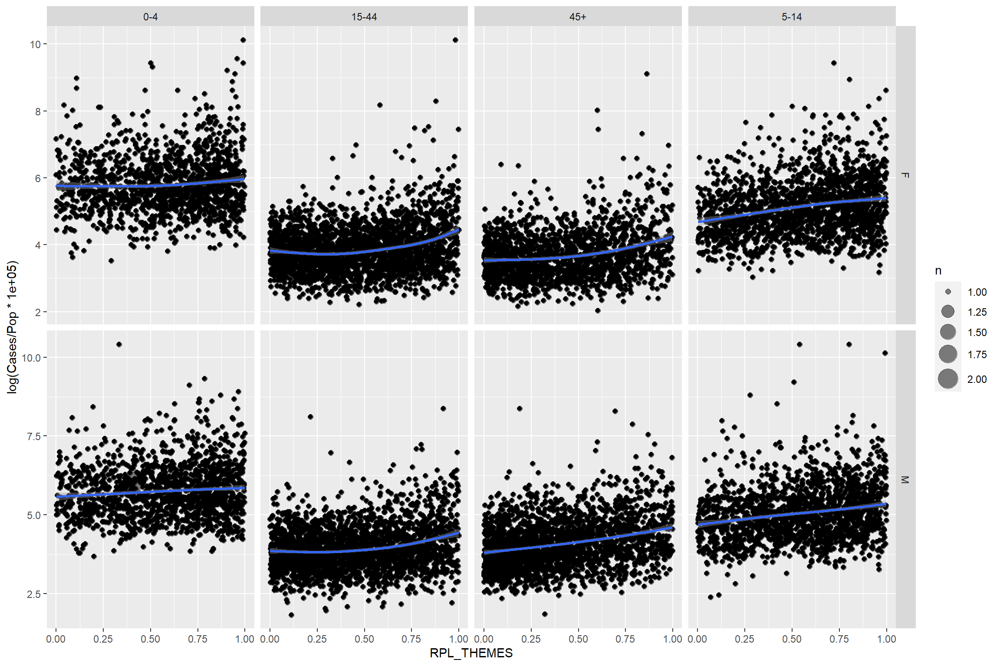
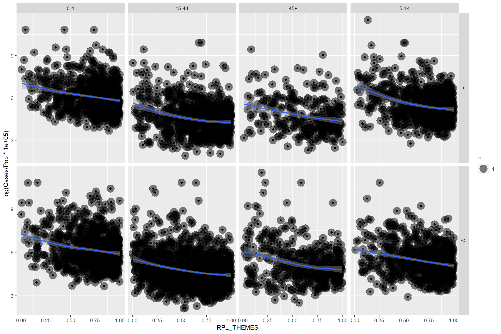
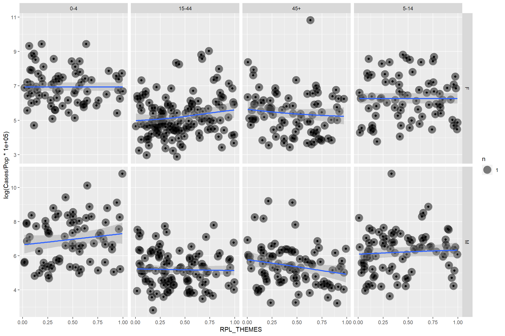

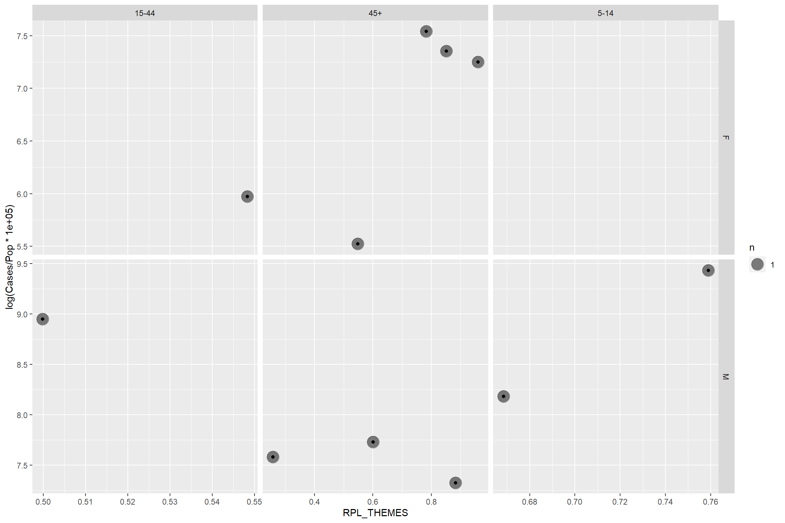
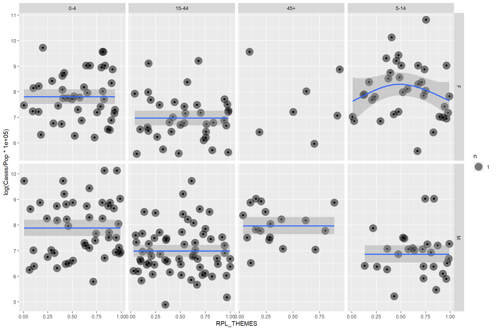
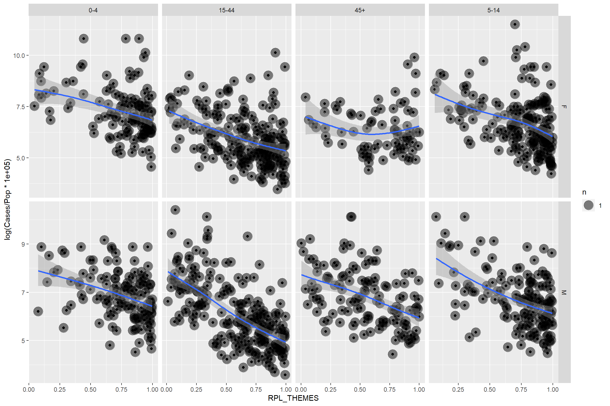
Hurdle Model Comparison
The original analysis plan calls for models stratified by race. For brevity, I am testing models on the reference race category (White). These models and the simulated residuals take a long time to run, so I’ll only run the final model on all race categories.
datlist<-race %>% split(.$Race)Create list of hurdle poisson and hurdle negative binomial models to compare fit. Each model includes the log of population as an offset term and a random intercept for the unique tract in the conditional portion of the model. Different covariates are evaluated in both the conditional and the zero-inflation (binomial) portion of the model.
#Truncated Poisson Distribution
#Null model
m0<-glmmTMB(Cases ~ offset(log(Pop)) + (1|GEOID), zi= ~1, family=truncated_poisson, data=datlist$White)
m1<-update(m0, Cases ~ quartile + offset(log(Pop)) + (1|GEOID))
m2<-update(m1, Cases ~ quartile + sviyear + offset(log(Pop)) + (1|GEOID))
m3<-update(m2, Cases ~ quartile + sviyear + Sex + offset(log(Pop)) + (1|GEOID))
m4<-update(m3, Cases ~ quartile + sviyear + Sex + AgeGroup + offset(log(Pop)) + (1|GEOID))
m5<-update(m4, ziformula=~quartile + sviyear + Sex + AgeGroup)
m6<-update(m5, ziformula=~.)
#Truncated negative binomial distribution
m7<-update(m0, family=truncated_nbinom2)
m8<-update(m1, family=truncated_nbinom2)
m9<-update(m2, family=truncated_nbinom2)
m10<-update(m3, family=truncated_nbinom2)
m11<-update(m4, family=truncated_nbinom2)
m12<-update(m5, family=truncated_nbinom2)
m13<-update(m6, family=truncated_nbinom2)Compare model information
models<-list(m0, m1, m2, m3, m4, m5, m6, m7, m8, m9, m10, m11, m12, m13)
model_specs<-data.frame()
for (i in 1:length(models)){
model_specs[i, 1]<-as.character(models[[i]]$call)[2]
model_specs[i, 2]<- as.character(models[[i]]$modelInfo$allForm$ziformula)[[2]]
model_specs[i, 3]<-as.character(models[[i]]$call)[4]
model_specs[i, 4]<-AIC(models[[i]])
model_specs[i, 5]<-ifelse(models[[i]]$fit$convergence==0, 'Yes', 'No')
model_specs[i, 6]<-length(models[[i]]$fit$par)
model_specs[i, 7]<-sigma(models[[i]])
}
colnames(model_specs)<-c('Conditional Formula', 'ZI Formula', 'Distribution',
'AIC', 'Covergence', 'DF', 'Dispersion Parameter')
model_specs %>%
kbl() %>%
kable_material(c("striped"))| Conditional Formula | ZI Formula | Distribution | AIC | Covergence | DF | Dispersion Parameter |
|---|---|---|---|---|---|---|
| Cases ~ offset(log(Pop)) + (1 | GEOID) | 1 | truncated_poisson | 139669.9 | Yes | 3 | 1.000000e+00 |
| Cases ~ quartile + (1 | GEOID) + offset(log(Pop)) | 1 | truncated_poisson | 139576.7 | Yes | 6 | 1.000000e+00 |
| Cases ~ quartile + sviyear + (1 | GEOID) + offset(log(Pop)) | 1 | truncated_poisson | 139577.2 | Yes | 7 | 1.000000e+00 |
| Cases ~ quartile + sviyear + Sex + (1 | GEOID) + offset(log(Pop)) | 1 | truncated_poisson | 139514.1 | Yes | 8 | 1.000000e+00 |
| Cases ~ quartile + sviyear + Sex + AgeGroup + (1 | GEOID) + offset(log(Pop)) | 1 | truncated_poisson | 138220.1 | Yes | 11 | 1.000000e+00 |
| Cases ~ quartile + sviyear + Sex + AgeGroup + (1 | GEOID) + offset(log(Pop)) | quartile + sviyear + Sex + AgeGroup | truncated_poisson | 137467.2 | Yes | 19 | 1.000000e+00 |
| Cases ~ quartile + sviyear + Sex + AgeGroup + (1 | GEOID) + offset(log(Pop)) | quartile + sviyear + Sex + AgeGroup + (1 | GEOID) | truncated_poisson | 132253.5 | Yes | 20 | 1.000000e+00 |
| Cases ~ offset(log(Pop)) + (1 | GEOID) | 1 | truncated_nbinom2 | 139194.6 | Yes | 4 | 2.121508e-01 |
| Cases ~ quartile + (1 | GEOID) + offset(log(Pop)) | 1 | truncated_nbinom2 | 139088.0 | Yes | 7 | 1.510907e-01 |
| Cases ~ quartile + sviyear + (1 | GEOID) + offset(log(Pop)) | 1 | truncated_nbinom2 | 139083.3 | Yes | 8 | 1.425852e-01 |
| Cases ~ quartile + sviyear + Sex + (1 | GEOID) + offset(log(Pop)) | 1 | truncated_nbinom2 | NA | No | 9 | 1.117559e+10 |
| Cases ~ quartile + sviyear + Sex + AgeGroup + (1 | GEOID) + offset(log(Pop)) | 1 | truncated_nbinom2 | 139290.4 | Yes | 12 | 3.300000e-06 |
| Cases ~ quartile + sviyear + Sex + AgeGroup + (1 | GEOID) + offset(log(Pop)) | quartile + sviyear + Sex + AgeGroup | truncated_nbinom2 | 137438.3 | Yes | 20 | 4.728360e+00 |
| Cases ~ quartile + sviyear + Sex + AgeGroup + (1 | GEOID) + offset(log(Pop)) | quartile + sviyear + Sex + AgeGroup + (1 | GEOID) | truncated_nbinom2 | 132224.5 | Yes | 21 | 4.728549e+00 |
Extract model with best overall fit
final_mod<-models[[which.min(sapply(1:length(models),function(x)AIC(models[[x]])))]]Visualize simulated residuals from best fit model. This takes > 15 min
simulationOutput <- simulateResiduals(fittedModel = final_mod, n = 1000)
plot(simulationOutput)DHARMa:testOutliers with type = binomial may have inflated Type I error rates for integer-valued distributions. To get a more exact result, it is recommended to re-run testOutliers with type = 'bootstrap'. See ?testOutliers for details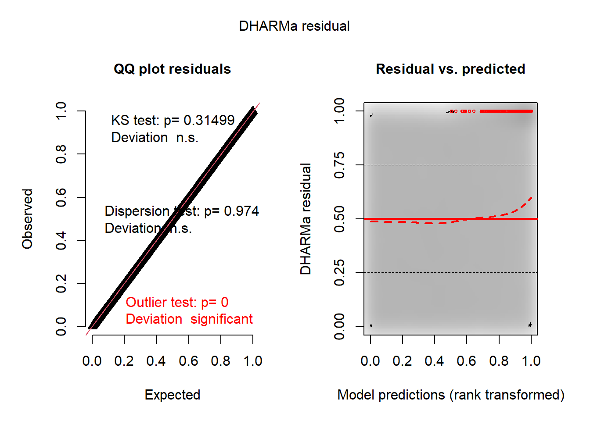
testDispersion(simulationOutput = simulationOutput, alternative ="less")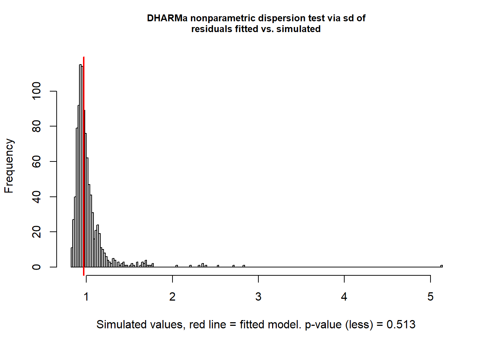
DHARMa nonparametric dispersion test via sd of residuals fitted vs.
simulated
data: simulationOutput
dispersion = 0.94932, p-value = 0.513
alternative hypothesis: lesstestUniformity(simulationOutput = simulationOutput, )DHARMa:testOutliers with type = binomial may have inflated Type I error rates for integer-valued distributions. To get a more exact result, it is recommended to re-run testOutliers with type = 'bootstrap'. See ?testOutliers for details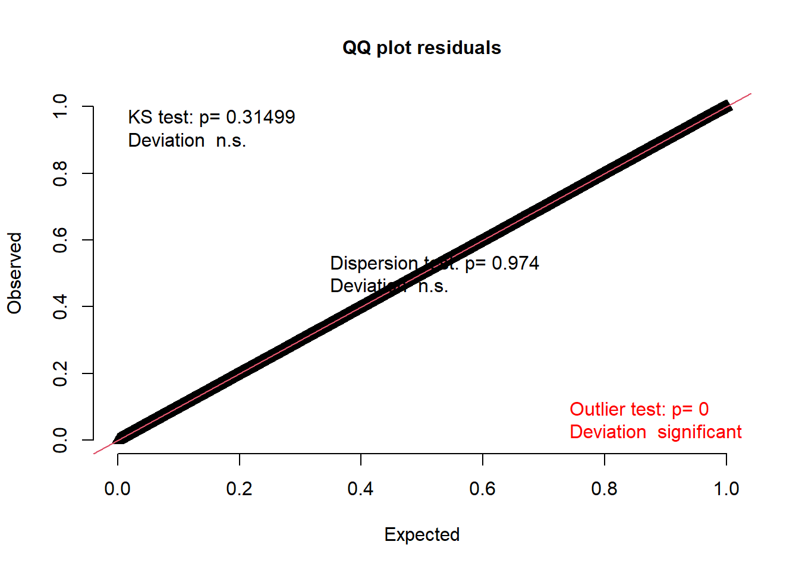
Asymptotic one-sample Kolmogorov-Smirnov test
data: simulationOutput$scaledResiduals
D = 0.0014965, p-value = 0.315
alternative hypothesis: two-sided#Predicted probabilities (p=p.1*(1-p.2))
#--------------------------------------------------------------------
p<-predict(m9, type='response')
p.1<-predict(m9, type='conditional')
p.2<-predict(m9, type='zprob')